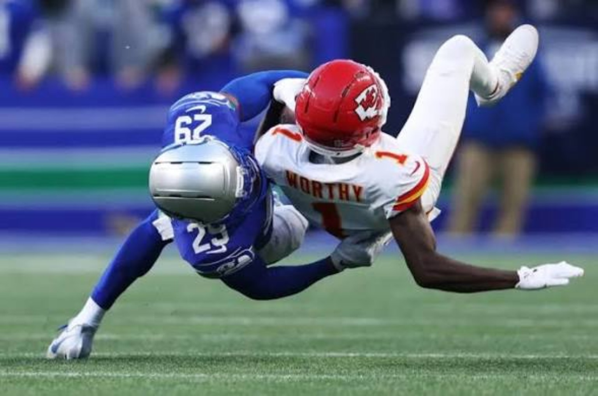

SEATTLE SILENCES KANSAS CITY.
Seahawks 20, Chiefs 3. The defending champions deliver a complete Sunday Night Football statement and hand Mahomes his first loss of the season.

THE NIGHT SEATTLE TOOK AWAY KANSAS CITY'S OFFENSE
Seattle's 20–3 victory over previously unbeaten Kansas City was the loudest defensive statement of Week 7. The Chiefs came in with a perfect record and an offense built to threaten opponents in several ways. The Seahawks reduced that attack to one field goal. Patrick Mahomes completed 19 of 33 passes for 165 yards with an interception, and Kansas City finished with just 213 total yards.
That is the central story of the night: Seattle took away the rhythm that usually makes Kansas City so difficult to defend. The Chiefs could not consistently generate efficient early downs, and without that foundation the passing game had to operate under pressure. A quarterback as creative as Mahomes can rescue broken plays, but even he cannot manufacture an entire offense when the run game is stalled and the passing windows remain tight.
Kenneth Walker III's return to Seattle—this time in a Chiefs uniform—added an emotional subplot. He managed only 36 yards on 14 carries. Seattle's front did not allow the homecoming to become a revenge-game headline. Instead, it forced Kansas City to live with difficult rushing situations and made the visitors work for every yard.
On the other side, the Seahawks accumulated 410 total yards. Sam Darnold threw for 257 yards and a touchdown, while Jaxon Smith-Njigba was the clear receiving centerpiece with nine catches for 150 yards and a score. That combination matters because Seattle did not simply rely on defensive takeaways or favorable field position; its offense consistently moved the ball and gave the defense room to stay aggressive.

Emanuel Wilson supplied the ground-game finish, rushing for 100 yards and sealing the contest with a 21-yard touchdown. The run was more than an insurance score. It was the final expression of Seattle's control: with Kansas City needing stops to preserve a comeback chance, the Seahawks could still attack on the ground and close the door.
Seattle entered this game at 3–3, an uncomfortable start for the defending champions. A win like this does not erase the earlier uneven performances, but it does reveal a sustainable formula. The Seahawks have a receiving star who can win high-volume matchups, a quarterback capable of distributing the ball, and a defense that can turn an elite offense ordinary for four quarters.
For Kansas City, one loss does not invalidate a 5–0 start. But the manner of this defeat demands attention. Scoring three points while conceding 410 yards is not simply a bad bounce or one missed opportunity. The Chiefs need to examine their early-down run efficiency, protection and answers when opponents limit Mahomes' first reads. The AFC race remains open, and opponents now have a high-profile example of what worked against them.
4DK VERDICT: This was not Seattle surviving Kansas City; it was Seattle dictating the game. The Seahawks move to 4–3 with a genuine statement win, while the Chiefs fall to 5–1 carrying their first major offensive warning sign of the season. The question now is whether Seattle can reproduce this level of physicality—and whether Kansas City can respond before another opponent tests the same weaknesses.